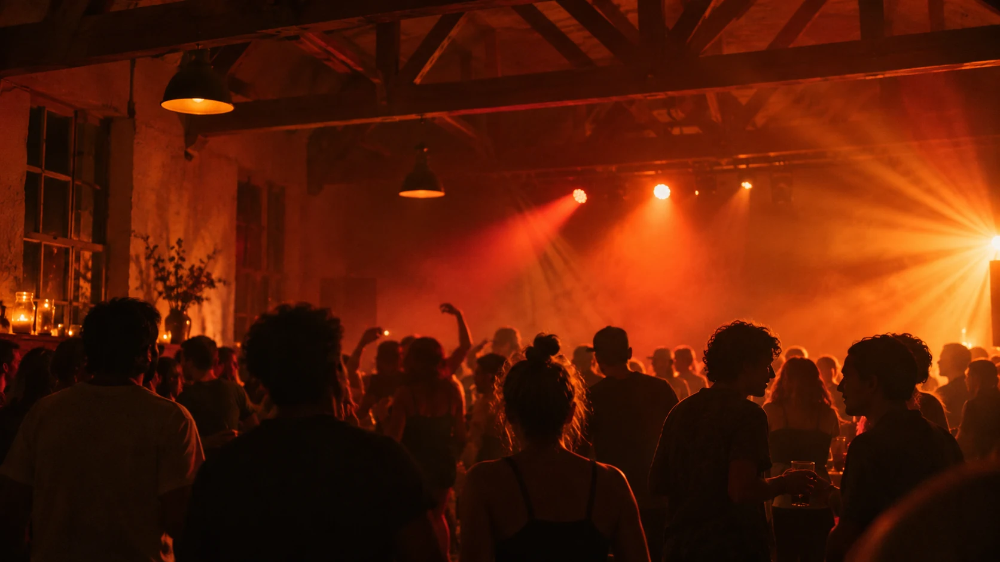

Events
Musik füreuren Anlass.
Vereinsabend, Schulparty oder Dorffest? Ich stelle das Set für euer Publikum zusammen und mixe es live. Mein Ausgangspunkt ist der Thurgau. Weitere Orte sind nach Absprache möglich.

Eventformate
So kann euer Abend klingen.
-
Vereinsfeste
Vom gemütlichen Einstieg nach dem offiziellen Teil bis zu Mitsinghits und Dance am späteren Abend. Der Mix kann Mundart, Rock, Pop und aktuelle Partytracks verbinden.
Anfragen -
Schulpartys
Charts, Dance und bekannte Throwbacks bilden die Basis. Musikwünsche und Vorgaben zur Songauswahl können wir vorher mit dem Organisationsteam besprechen.
Anfragen -
Dorffeste
Bekannte Songs zum Ankommen, Schweizer Klassiker zum Mitsingen und tanzbare Tracks für später. Ich richte die Energie nach dem Ablauf und den Leuten vor Ort.
Anfragen -
Private Feiern
Ob Geburtstag oder eine andere private Party, eure Favoriten geben die Richtung vor. Sag mir auch gern, was auf keinen Fall laufen soll.
Anfragen
Ablauf
Von der Anfrage zum Set.
Anfragen
Schick mir den Anlass, den Ort und wenn möglich Datum, Spielzeit und ungefähr die Zahl der Gäste.
Absprechen
Wir klären Musik, Ablauf, Gage und die vorhandene Ton- und Lichttechnik mit euch oder der Location.
Auflegen
Ich bringe mein DJ-Setup mit und passe die Musikauswahl während des Abends an die Stimmung an.
Gut zu wissen
Häufige Fragen.
Spielst du auch ausserhalb des Thurgaus?
Ja, nach Absprache. Gib den Ort oder die Region im Formular an, damit ich die Anreise einplanen kann.
Können wir Musikwünsche angeben?
Ja. Schick mir gerne Favoriten, Musikrichtungen und Songs, die ihr lieber auslasst.
Welche Technik wird vor Ort gebraucht?
Mein DJ-Setup bringe ich mit. Tonanlage, Licht, Anschlüsse und Platz fürs Pult besprechen wir vorab passend zur Location.
Was kostet ein Auftritt?
Das hängt von Ort, Spieldauer und benötigter Technik ab. Mit diesen Angaben kann ich dir ein Angebot für euren Anlass machen.
Booking
Erzähl mir von eurem Anlass.
Auch wenn das Datum noch offen ist, können wir über euren Event sprechen.